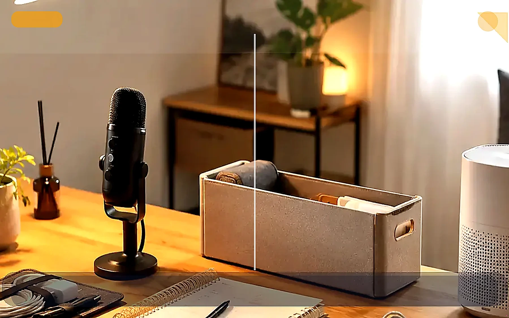

트렌드 쇼핑 전 체크리스트

유행 상품을 사기 전 문제 해결성, 사용 빈도, 보관 위치, 콘텐츠 연결성을 확인하는 체크리스트입니다.
핵심 정리
이 글은 쇼츠 유입, 사이트 체류, 내부링크, 상품 조합으로 이어지는 흐름을 만들기 위한 허브 글입니다.
이런 상황이라면 이렇게 시작하세요
사야 할 것 같지만 확신이 없다면
인기 상품은 많지만 내 상황에 정말 필요한지 판단할 기준이 없으면 쉽게 광고처럼 느껴질 수 있어요.
바로 사기부터 하지 마세요
좋아 보이는 상품을 먼저 고르기보다 내가 반복해서 겪는 불편함이 무엇인지 먼저 보는 편이 후회가 적습니다.
구매 전 기준을 먼저 확인하세요
사용 빈도, 놓을 위치, 이미 가진 대체품, 사지 않아도 되는 경우를 먼저 체크하세요.
지금 해볼 것
바로 사기 전에 확인하세요에서 내 상황에 맞는 항목 1개만 골라보세요.
이 글이 필요한 사람
- 쇼츠나 블로그를 사이트 유입으로 연결하고 싶은 사람
- 광고처럼 보이지 않는 구매 전 콘텐츠를 만들고 싶은 사람
- 생활 개선 주제를 콘텐츠와 상품 조합으로 확장하고 싶은 사람
실행 순서
- 문제 상황을 하나 정합니다.
- Before / After가 보이는 포인트를 찾습니다.
- 쇼츠용 30초 후킹 문장을 만듭니다.
- 사이트 글에서 체크리스트와 판단 기준을 제공합니다.
- 관련 글과 카테고리 허브로 내부링크를 연결합니다.
쇼츠 연결 구조
| 단계 | 역할 | 예시 |
|---|---|---|
| 쇼츠 | 관심 유입 | 30초 Before / After |
| 사이트 글 | 상세 설명 | 체크리스트와 실패 패턴 |
| 카테고리 허브 | 관련 글 탐색 | AI / 집중력 / 공간 / 쇼핑 |
| 상품 조합 | 전환 준비 | 구매 전 기준 제시 |
FAQ
처음부터 장비를 사야 하나요?
아니요. 먼저 현재 갖고 있는 물건으로 문제를 해결할 수 있는지 확인한 뒤, 가장 불편한 1개만 보완하는 것이 좋습니다.
AI로 쓴 글도 괜찮나요?
AI 초안은 가능하지만, 실제 판단 기준, 경험적 관찰, 사지 않아도 되는 경우를 추가해야 신뢰도가 올라갑니다.
바로 사기 전에 이 기준부터 확인하세요
추천 대상
퇴근 후 부업, AI 영상 제작, 자취방 개선을 시작하려는 사람
먼저 볼 항목
책상 조명, 핀마이크, 수납/생활 개선 아이템
사지 않아도 되는 경우
사용 위치와 목적이 정해지지 않았다면 구매를 미루세요.
먼저 해볼 것
기존 물건으로 3일만 테스트하고 부족한 항목만 비교하세요.
지금 해볼 것 선택
바로 구매를 유도하기보다, 내 상황에 맞는 글을 더 읽고 필요한 항목만 비교하는 흐름을 추천합니다.
바로 사기 전에 하나만 확인하세요
사용 빈도, 놓을 위치, 사지 않아도 되는 경우를 먼저 체크하세요.